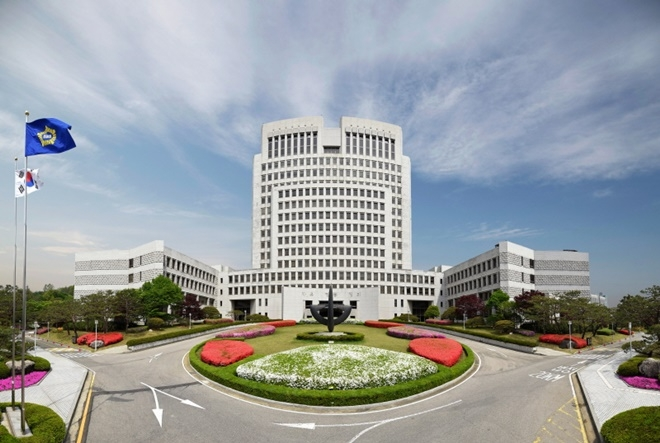

안내사항 > 청사안내
청사안내
청사소개
일제강점기인 1928년 서울 중구 서소문동 37번지 대지 23,958㎡에 연건평 10,329㎡의 건물이 신축되어 경성복심법원 및 경성지방법원으로 사용되어 오다가 1948년 이후부터 대한민국 대법원청사로 사용되어 왔습니다. 계속되는 대법원의 기구확대 및 직원수의 증가 등에 따라 이 건물만으로는 수용이 어려워 1957년 그 옆에 연면적 1,433㎡의 제1별관을, 1968년 연면적 3,216㎡의 제2별관을 각 신축하여 1995년 10월까지 대법원과 법원행정처, 법원도서관이 함께 사용하여 왔습니다. 그 이후 현재까지 현 서초 청사를 사용하고 있습니다.
연 혁

- 1926년 10월 서소문 청사 착공
- 1928년 10월 서소문 청사 준공
- 1948년 서소문 청사 대법원으로 사용
- 1991년 11월 29일 현 서초 청사 착공
- 1995년 9월 23일 현 서초 청사 준공
- 1995년 12월 1일 준공식 거행
개 요
| 대지 | 약 57,692평방미터 |
|---|---|
| 연면적 | 약 66,493평방미터 |
| 층수 및 구조 | 지하 2 층 , 지상 16 층 철골 . 철근 콘크리트조 |
| 주차 | 539대(옥내 339대, 옥외 200대) |
| 설계자 | ㈜종합건축사사무소 원도시 건축 |
| 시공자 | 건축 - 현대건설㈜ 전기 - 경우전기 통신 - ㈜ 제일통신공사 |
| 건물배치 | 본관(대법원) 동관(법원행정처) 서관(도서관, 전산실, 후생시설), 법정동의 4개동 |